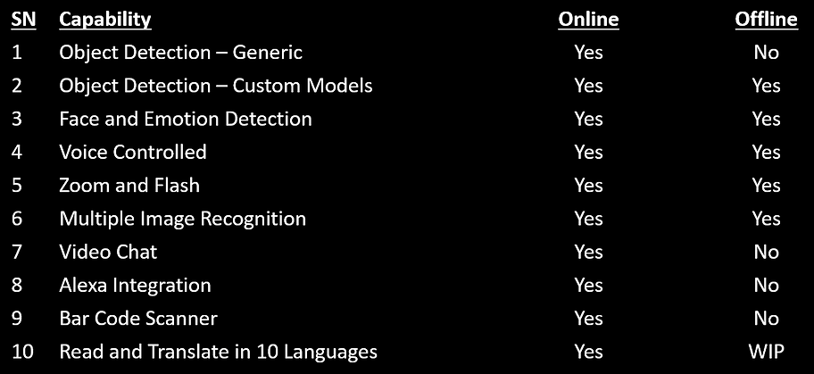
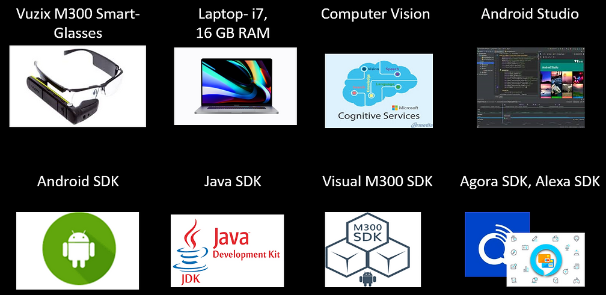
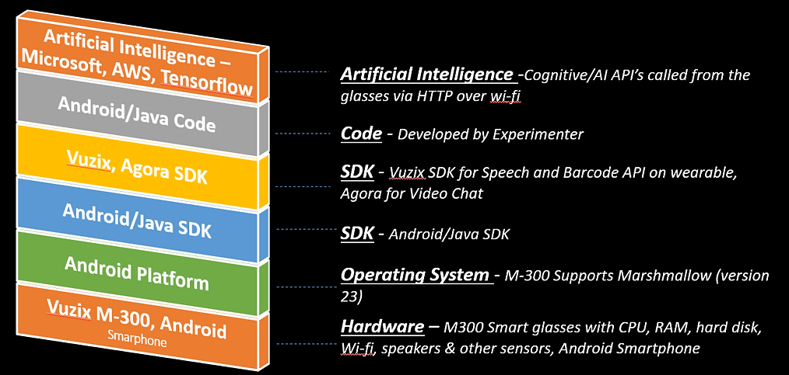
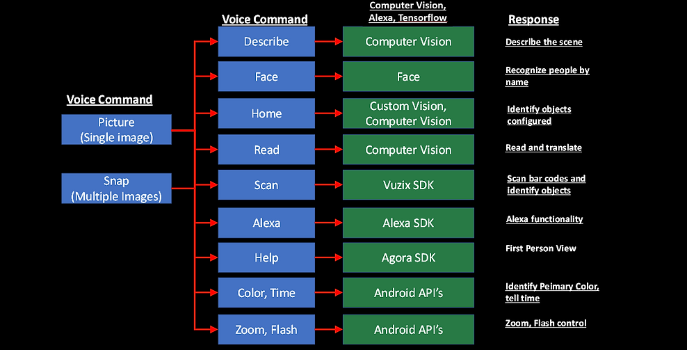

iSight
iSight - Application Capabilities
iSight – Development Tools
1. Set up the Development Environment a.Download Android Studio. b.Select Android 23 (Marshmallow) while configuring the environment (The M300 works with Android SDK v23). c.Download M300 SDK as per the instruction given on the Vuzix portal.
2. Set up Vuzix M-300 a.Set up Vuzix M300 Augmented Reality Glasses as per the M300 user manual. b.Set up a stable Wi-Fi connection as specified in the M300 user manual. c.Run available demos (video_hw_encoding, camera_flash, camera_focus, barcode_v3). d.Validate that the demos work.
3. Setup Microsoft Vision API's a.Create an Azure account. b.Create Services for Computer Vision API. c.Generate Computer Vision keys to be used in the main program. These keys contain the access to Azure's respective APIs
4. Test Microsoft Vision API's a.Use Azure Cognitive and AI API's to
perform video analytics. b.The Azure API's will determine various
things like people detection, emotion analysis, object detection,
optical character reading. The testing tool is
provided by Microsoft on the Microsoft AI portal.
5. Coding a.Create a new Android project with a form and two buttons
– one for a single image click, and another for continuous image
clicks. Take appropriate
functions from Vuzix Sample Projects that helps in image capture.
b.Converting the captured imagebytes to a byte array and call the
appropriate vision API. c.When the picture is clicked, take the byte
stream and send an HTTP request to the Vision API. d.Take the
response, and parse it to get the output of the API that describes
what the camera is "Seeing“. e.Pass the response to the Text to
Speech Engine, which routes this to have the speaker articulate what
it is seeing in audio format. f.Create another button, doing the
above repeatedly until prompted to stop.
6. Testing a.Transfer the application to the Vuzix M300 device. b.Turn the M300’s wi-fi on, connect to a stable wi-fi source. A smartphone is used her as the testing is done indoors and outdoors. c.Run it to see about different objects and note the accuracy of the device and API. Take some conditions in low light as well. a.20 objects at about 10 feet, good light (daylight or a well lit room). b.20 objects at about 20 feet, good light (daylight or a well lit room). c.20 objects at about 30 feet, good light (daylight or a well lit room). d.20 objects at about 10 feet, insufficient light (dawn/dusk or a low lit room). e.20 objects at about 20 feet, insufficient light (dawn/dusk or a low lit room). f.20 objects at about 30 feet, insufficient light (dawn/dusk or a low lit room). g.Run the continuous viewing for the good and low light conditions
7. Result a. Document the results, take photographs of the
object/scene which the Vuzix M300 is pointed to. Categorize the
results as accurate, semi accurate, or
inaccurate
iSight – Logical Design
iSight – Capability Workflow

Programmable Smart Glasses
Very few smart glasses are available.
Glasses evaluated – •Vaunt •Google Glass •Intel Glass •MS HoloLens
•Vuzix Blade and Vuzix M 300 XL Vuzix M 300 XL selected
The cognitive capabilities in AI have been around for only about two years.
The Cognitive API evaluated - •Microsoft •Google •Amazon
Microsoft was finally chosen (best documentation & training material)